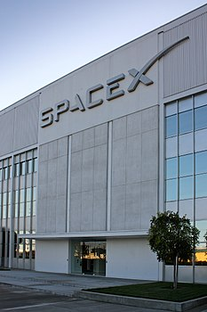

О компании SpaceX
Основана в 2002 году прежним акционером PayPal и CEO Tesla Motors Илоном Маском, с целью сократить расходы на полёты в космос, открывая путь к колонизации Марса. Компания разработала ракеты-носители Falcon 1 и Falcon 9, с самого начала преследуя цель сделать их многоразовыми, и космический корабль Dragon (выводимый на орбиту теми же Falcon 9), предназначенный для пополнения запасов на Международной космической станции. Пассажирская версия корабля Dragon V2 для транспортировки астронавтов на МКС находится в финальной фазе разработки. С 2015 года участвует также в реализации проекта вакуумного поезда Hyperloop.

Список работников
Иванов Иван Иванович
Со-основатель компании PayPal; основатель, совладелец, генеральный директор и главный инженер компании SpaceX; председатель совета директоров, генеральный директор и главный, единственный идейный вдохновитель (Chief Product Architect) компании Tesla; также был членом совета директоров компании SolarCity, основанной его двоюродными братьями, до её слияния с Tesla.
Сидоров Александр Сергеевич
31 октября 2008 года Александр опубликовал статью «Bitcoin: A Peer-to-Peer Electronic Cash System»в списке рассылки о криптографии (The Cryptography Mailing list) metzdowd.com, в которой описал Биткойн — полностью децентрализованную систему электронной наличности, не требующую доверия третьим сторонам. В начале 2009 года он выпустил первую версию биткойн-кошелька и запустил сеть Биткойн.